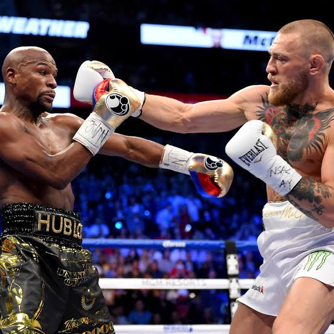
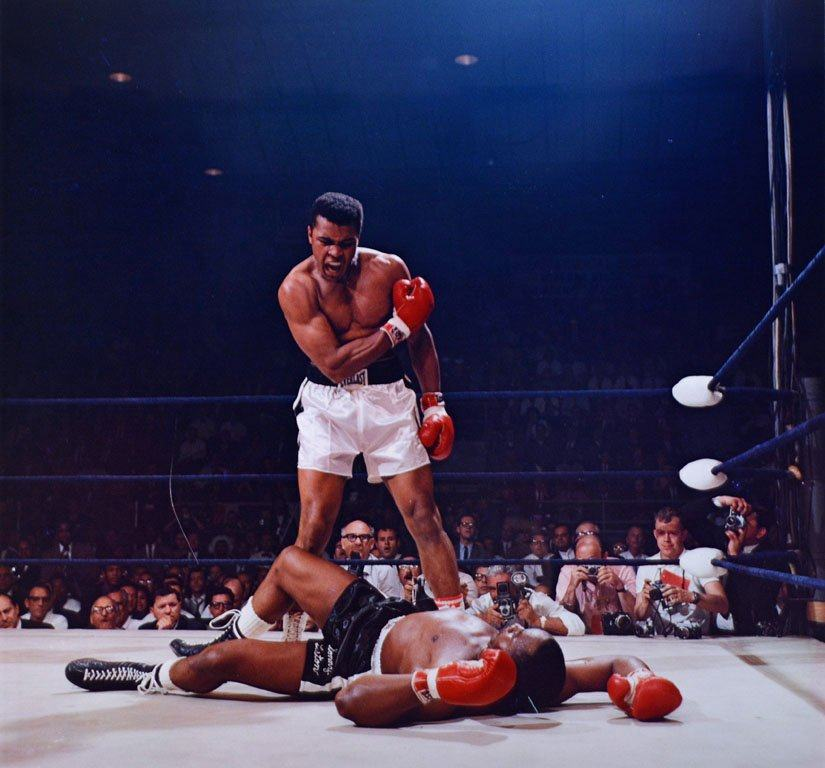
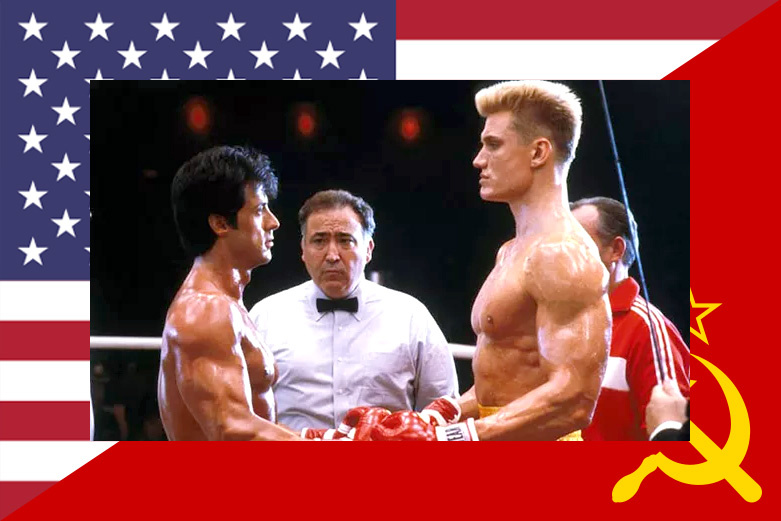

Meu primeiro post — O que é o Boxe?
Por: Murilo
O boxe é um esporte de combate praticado entre dois atletas. Os lutadores utilizam luvas e seguem regras específicas para realizar golpes e se defender. Além de exigir força, o boxe também exige velocidade, técnica, resistência e concentração.
Meu segundo post — Grandes nomes do Boxe
Por: Murilo

O boxe possui grandes atletas que marcaram a história do esporte. Muhammad Ali é um dos nomes mais conhecidos, famoso por sua técnica, velocidade e personalidade. Outros grandes nomes também ajudaram a tornar o boxe um dos esportes de combate mais populares do mundo.

Meu terceiro post — Benefícios do Boxe
Por: Murilo
A prática do boxe pode ajudar a melhorar o condicionamento físico, a coordenação motora, a velocidade e a resistência. Os treinamentos também trabalham bastante a disciplina e a concentração.

Meu quarto post — Os Golpes Básicos do Boxe
Por: Murilo
Para quem está começando, dominar os golpes básicos é fundamental. O jab é um soco rápido com a mão da frente para medir a distância. O direto vem com a mão de trás, trazendo toda a força do corpo. Temos também o cruzado, lançado lateralmente, e o gancho (u舉辦percut), que viaja de baixo para cima mirando o queixo do adversário.

Meu quinto post — Equipamentos Essenciais para Começar
Por: Murilo
Se você quer iniciar nos treinos de boxe, vai precisar de alguns itens de proteção indispensáveis. O primeiro são as bandagens, que protegem os ossos da mão e o pulso. Depois, as luvas de boxe adequadas ao seu peso. Por fim, o protetor bucal e o capacete são vitais para garantir a sua segurança durante os combates (sparrings).